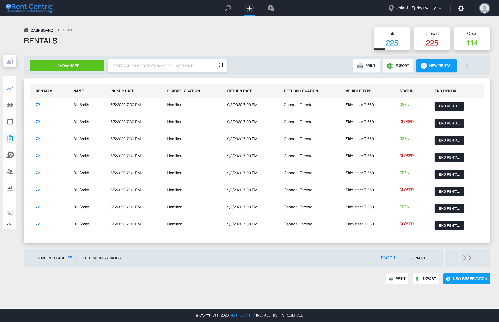

RentCentric
Enterprise Car Rental Management Platform — End-to-End UX Design for a B2B SaaS Operations Platform
Project Overview
RentCentric is a comprehensive B2B SaaS platform built for car rental operators managing daily fleet and reservation operations. The platform serves multi-branch rental companies — enabling rental agents, branch managers, and administrators to coordinate reservations, active rentals, fleet availability, customer relationships, pricing, and system configuration from a single unified interface.
This case study documents the full end-to-end UX design process — from initial research and discovery through to design, testing, and measured impact. Every decision described here was grounded in direct user research, operational context, and iterative validation.
Empathize
The first phase focused entirely on understanding the operational reality of car rental staff. Rather than assuming what users needed, the research process was designed to surface actual friction, workarounds, and mental models that agents and managers had developed over years of using disconnected tools.
Car rental operations are high-velocity, time-sensitive environments. During peak hours, a single rental agent may handle 15–25 transactions, each requiring coordination across reservations, vehicle availability, customer records, and billing. Even a 30-second inefficiency per booking compounds into hours of lost productivity per day across a multi-agent branch.
- Reduce average booking time from initial inquiry to confirmed reservation
- Minimize operational errors caused by manual data entry and system switching
- Provide real-time fleet and reservation visibility across all branches
- Support high-volume daily operations without system bottlenecks
- Enable faster onboarding for new staff with a self-explanatory interface
Interviews were conducted in-person at two branch locations and remotely with three additional participants, using a 12-question script with role-adjusted probes to surface workflow inefficiencies, mental models, and workarounds.
- Relied on memory and handwritten notes to track overdue rentals
- Developed personal shortcuts unknown to newer staff
- Lost a confirmed booking due to vehicle availability not updating in real time
- Took approximately six weeks to feel independently productive
- Frequently asked colleagues for help finding the right screen
- Did not understand the Quotes vs. Reservations distinction until week three
- Used a separate spreadsheet to track agent-reservation assignments
- No way to see consolidated fleet status across the day
- Wanted alert-style indicators for overdue rentals and upcoming returns
- Described the confirmation step as redundant given information already entered
- Wanted the system to auto-populate vehicle details once a car was selected
- Estimated 3–4 minutes of unnecessary re-entry per reservation
- Created a personal reporting template in Excel mirroring what the dashboard should show
- Fleet availability status was the single most valuable piece of missing information
- Identified a proper real-time dashboard as her top request
- Settings module lacked hierarchy and grouped unrelated configurations together
- No way to distinguish safe operational settings from system-critical configurations
- Wanted role-based clarity on what each user type should and should not access
- Status labels and visual differentiation were insufficient for quick scanning
- Wanted color-coded status indicators for instant comprehension
- Described anxiety about whether a booking was truly confirmed
A structured survey administered across four branches validated the qualitative findings at scale, mixing Likert ratings, multiple-choice, and open-ended questions.
Define
With the research complete, the Define phase synthesized all findings into focused design targets: a clear problem statement, defined user jobs, behavioral personas, and a journey map identifying the highest-impact opportunities.
Rental agents and branch managers need a faster, more intuitive way to manage reservations, active rentals, and fleet availability — because current workflows are fragmented across multiple screens, require repetitive data entry, and provide no real-time operational visibility — leading to errors, delays, and heavy reliance on external workarounds that compound over time.
- Process each reservation in under 3 minutes without errors
- See vehicle availability without navigating away from the booking flow
- Access returning customer information instantly without searching
- End each day knowing all active rentals are properly accounted for
- Fragmented workflow requiring multiple screens for one task
- Manual re-entry of data that should carry forward automatically
- No visual hierarchy to distinguish what requires immediate attention
- Status ambiguity creating uncertainty about confirmed bookings
- Start the day with an immediate picture of fleet status and reservation load
- Identify overdue rentals and upcoming returns without drilling into records
- Monitor agent activity and flag bottlenecks before they become customer problems
- Generate end-of-day summaries without manual report building
- No consolidated real-time view — forced to build one manually each morning
- No urgency signals for overdue rentals or pending actions
- Reports require navigation across multiple modules
- No visibility into which reservations are at risk
- Maintain system configuration integrity across all branches
- Prevent agents from accidentally altering critical platform settings
- Make rate and policy changes without system downtime
- Audit configuration changes and trace who made them
- Settings module groups everything together with no hierarchy or risk indication
- No role-based safeguards on sensitive configuration areas
- Receives support requests from agents who inadvertently changed something
- "I need to check three places before I can confirm anything."
- "The system doesn't tell me what I need to do first."
- "I have my own system written in my notebook."
- Will this vehicle actually be available when the customer arrives?
- Did I enter that customer correctly, or did I create a duplicate?
- Is this booking truly confirmed, or is it still pending?
- Opens multiple browser tabs simultaneously for one transaction
- Keeps a paper notepad for tracking things the system doesn't surface
- Asks experienced colleagues for help navigating edge cases
- Anxious during peak hours when the queue grows and the system slows them down
- Frustrated by repetitive re-entry of information already provided
- Proud of personal workarounds, but aware they shouldn't be necessary
No unified view of available vehicles by date; manual price calculation
Auto-availability check on date selection; rate auto-population from defined rules
Multi-screen navigation; duplicate data entry; unclear confirmation status
Single-flow reservation builder; customer auto-fill; clear confirmed state
Finding reservation requires search; no single start-rental action
One-click conversion from reservation to active rental; vehicle status indicator
No proactive overdue alerts; status not visible from overview; manual tracking
Overdue indicators on rental list; real-time duration tracking; manager alerts
Rental close requires multiple steps across screens; charges not auto-calculated
Streamlined close flow; damage recording within same workflow; auto charge summary
Ideate
The Ideate phase translated defined problems into concrete solution directions. Working collaboratively with product stakeholders, the team used structured ideation to generate a broad set of possibilities before converging on a prioritized solution set.
Prototype
The Prototype phase moved from concepts to structured designs — progressing from low-fidelity layout sketches through mid-fidelity component definitions to the final high-fidelity interface. Each stage was reviewed with representative users before advancing.
- Agent opens Reservations module or selects "Make Reservation" from the global quick-access menu
- Customer search triggers auto-complete; returning customers auto-populate all contact fields immediately
- Agent selects dates; vehicle availability grid updates in real time — embedded inline, no separate screen
- Vehicle selection auto-populates category, details, and rate into the form
- Agent reviews a consolidated summary panel before confirming
- Confirmation sets status to Confirmed — record immediately appears in Reservations list
- Agent opens confirmed reservation and selects "Start Rental" — no separate rental creation step required
- Vehicle inspection checklist presented before activation; damage can be recorded at this stage
- Rental record created with Active status; real-time duration counter begins
- Overdue rentals surface at list top automatically with elapsed time displayed inline
- Return flow: damage recording, mileage entry, and charge summary completed inline without switching screens
- Vehicle status reverts to Available in fleet inventory upon rental close
A consistent status taxonomy defined and applied uniformly across all modules. Green always means positive or active. Red always means attention required. Amber always means pending or at risk. This semantic consistency transfers across every module without relearning.
A two-layer navigation structure: a persistent left sidebar for module-level navigation and a contextual top-bar for global actions. In icon-only mode, the main content area gains approximately 220px of width — significantly improving usability on data-heavy screens. Collapsing is user-controlled, not automatic.
- Related fields grouped into clearly labeled sections with visual separation
- Auto-populated fields visually distinguished from user-entered fields
- Inline validation provides feedback at field level immediately on blur
- Primary action button always anchored to the same position across all forms
- Destructive actions require a secondary confirmation step and are visually separated from primary actions
- Column headers are sortable with directional indicators
- Row-level inline status badges use the defined status taxonomy
- Action menus accessible via contextual icon at row level without navigating to detail view
- Bulk selection supported for batch operations such as status updates or exports
- Filters applied in real time without page reload
Final Design
The final shipped interface reflects the cumulative output of the research, ideation, and testing process. Each module directly addresses the specific operational needs identified in earlier phases while maintaining a consistent visual and interaction language across the entire platform.
Upon login, users are immediately presented with the information that previously required manual assembly every morning: total active reservations, in-progress rentals, available vehicles, and rental activity trends. Stat cards give an at-a-glance count for each critical operational metric. A rental trend chart enables managers to anticipate demand peaks. Fleet availability is visible through a dedicated widget without navigating to the Vehicles module. The global quick-action menu persists across all modules, giving agents the ability to initiate the three most common actions — Make Reservation, Start Rental, Add Task — without leaving their current context.

Creating a new reservation opens a unified form that consolidates all previously fragmented steps into a single progressive layout. Customer search triggers auto-complete and auto-populates all related fields. Date selection immediately filters the embedded vehicle availability section. The rate section auto-calculates based on vehicle category and rental duration. Upon confirmation, the record is assigned a Confirmed badge and immediately appears in the reservation list — no navigation required.


Overdue rentals are surfaced at the top of the list automatically and carry a red badge with elapsed overdue time displayed inline. The primary action button changes contextually based on rental state: active rentals show "Process Return"; overdue rentals show "Overdue — Process Return Now" in a red-accented button. Extensions and notes can be added without leaving the detail view — the entire lifecycle is handled from one screen.

Quotes convert to reservations in a single action, carrying all data forward without re-entry. Customer profiles serve as a single source of truth — contact details, rental history timeline, active reservations, and notes in a tabbed layout, with the ability to initiate new bookings directly from the profile. Settings uses a left-panel category navigation with role-access indicators (Admin Only vs. Manager Access) and a progressive disclosure architecture that surfaces commonly needed operational settings without exposing system-critical configurations to those who don't need them.
See Examples from this project Design/HTMLCode on githubReflections & Roadmap
- Starting with deep qualitative research before any design gave the project a shared factual foundation that prevented opinion-based decision-making
- Personas and journey map served as practical reference documents throughout the project — not just during the Define phase
- Two rounds of usability testing with different participant groups provided genuine measurement of improvement
- Defining the status taxonomy early and enforcing it consistently created coherence that users noticed immediately in testing
- Involving engineering earlier in Ideate would have surfaced technical constraints sooner and prevented one significant mid-design revision to the inline vehicle availability feature
- The Customer module would have benefited from dedicated research sessions rather than relying on general agent interview coverage
- A structured heuristic evaluation early in the process would have identified some navigation issues that only surfaced in Round 1 testing